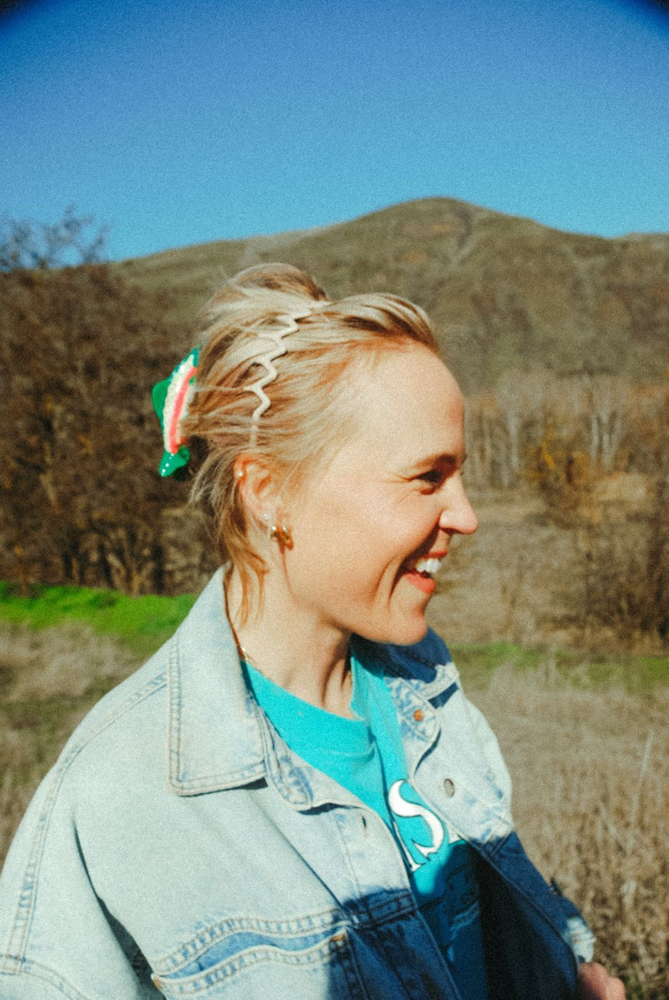

About Laurie
Historian and educator based in Lewiston, Idaho, where the Clearwater meets the Snake.

The long story of the Northwest
I'm Laurie Rudd, a historian and educator from Lewiston, Idaho. I teach the history of the Pacific Northwest, all the layers of peoples and events that made this region what it is, with a special love for the age of exploration.
That story starts long before any explorer arrived. The tribal nations of this region have lived on these rivers, prairies, and mountains since time immemorial, and teaching their side of the story with respect is at the heart of everything I do.
Idaho history is my deepest passion, especially the Lolo Trail through the Bitterroots. I teach in classrooms across the region and aboard American Cruise Lines voyages on the Columbia and Snake, but I'm happiest in the field, on trail and river trips where the historic sites are part of the adventure.
Book a presentationAfter this experience in the Bitterroots, my appreciation, understanding, and comprehension of the route Lewis and Clark's band took through this range has completely transformed. What was ambiguous and overwhelming is now comprehensible and accessible. Immersing myself in it I found clarity and a deep appreciation for the section of trail through Idaho.
Why Canoes and Confluences
I live at a confluence. In the fall of 1805, the Corps of Discovery came down the Clearwater in dugout canoes they built with Nimiipuu help, and passed the spot where it meets the Snake, right where Lewiston stands today. Nimiipuu people had been living and gathering along these rivers for countless generations before that.
The rivers of the Northwest have always been its roads, and nearly every chapter of the region's history happened where one river meets another. The name comes from my love for that history and my belief that the best way to understand it is to get out in it: to paddle the rivers, walk the trails, and stand in the places where it happened.
Background
- Degree in history and political science, BYU-Idaho
- Nearly a decade of teaching, from classrooms to the field
- Featured historian, American Cruise Lines, Columbia and Snake River voyages, heading into a third season
- Field crew, Lolo Reconnected Project with the Lewis and Clark Trail Alliance
- Trail and river trips with Lewis and Clark Trail Adventures